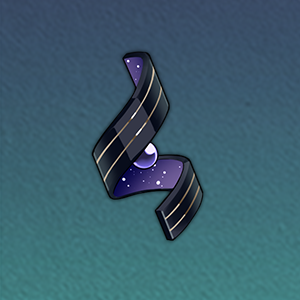

| 突破前 | 突破后 | 突破素材 | |
| 基础生命值 | 121 | - |
-
|
| 基础攻击力 | 92 | - | |
| 基础防御力 | 56 | - |
| 突破前 | 突破后 | 突破素材 | |
| 基础生命值 | 236 | 285 |

掠夺的本能 5
信用点 4000 |
| 基础攻击力 | 180 | 217 | |
| 基础防御力 | 109 | 131 |
| 突破前 | 突破后 | 突破素材 | |
| 基础生命值 | 346 | 394 |
掠夺的本能 10
信用点 8000 |
| 基础攻击力 | 263 | 300 | |
| 基础防御力 | 159 | 182 |
| 突破前 | 突破后 | 突破素材 | |
| 基础生命值 | 455 | 503 |
苦寒晶壳 3
篡改的野心 6
信用点 16000 |
| 基础攻击力 | 346 | 383 | |
| 基础防御力 | 210 | 232 |
| 突破前 | 突破后 | 突破素材 | |
| 基础生命值 | 564 | 613 |
苦寒晶壳 7
篡改的野心 9
信用点 40000 |
| 基础攻击力 | 429 | 466 | |
| 基础防御力 | 260 | 283 |
| 突破前 | 突破后 | 突破素材 | |
| 基础生命值 | 673 | 722 |
苦寒晶壳 20践踏的意志 6
信用点 80000 |
| 基础攻击力 | 512 | 549 | |
| 基础防御力 | 311 | 333 |
| 突破前 | 突破后 | 突破素材 | |
| 基础生命值 | 783 | 831 |
苦寒晶壳 35践踏的意志 9
信用点 160000 |
| 基础攻击力 | 595 | 632 | |
| 基础防御力 | 361 | 384 |
| 突破前 | 突破后 | 突破素材 | |
| 基础生命值 | 892 | - |
-
|
| 基础攻击力 | 679 | - | |
| 基础防御力 | 412 | - |